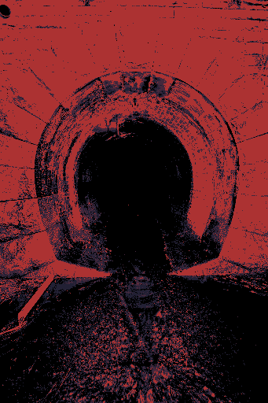
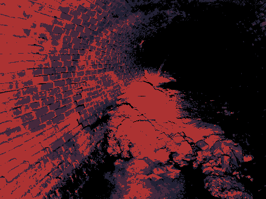
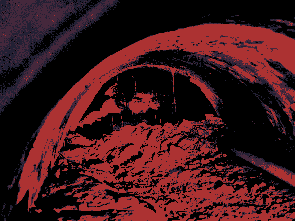

You are a maintainence worker. Your boss has sent you down to investagte a blockage in the lwoer tunnels that's causing problems
for the city. The pay is suspiously high but money is money and so you agree. You go to the worksite and put on your gear.
You go up to the open manhole and look down inside. A ladder disappears into the darkness as the sunlight doesn't reach very far. You lean away as the smell reaches your nose.
You descend into the manhole leaving the fresh air for the stuffy damp dark discomfort of the narrow space leading down. The light from above barely eluminating your surrondings.
You eventually reach the bottom and find yourself in a dimly lit tunnel ankle deep in cold water. The smell is bad, but your used to it. The distant sound of dripping water and the skittering of small critters can be heard.
You decide to leave and go home. Whatever is down there can wait a while longer. You might get fired for not doing your job, but it's not your problem now.
You walk further into the tunnel and eventually come to a well lit open area. There's a split off tunnel on the right, and the path forward continues, but the light doesn't reach far into the tunnel.
PlaceHolder

As you approach the opening of the tunnel you realize that it's wide enough for you to walk through, but seems to get narrower further in. Suddenly, you hear a faint voice call for help coming from deep within the pipe, distorted by the pipe as its echo bounces off the rusted walls. It seems whoever it is, is in distress.
You enter the tunnel. As you walk further, the tunnel shrinks and begins to darken. You can't stand anymore as the tunnel is too narrow. You get on your hands and knees and begin to crawl the dim light of your helmet eluminating only a few feet in front of you. You hear the voice again much louder and clearer this time.

You crawl further the floor and walls get increasingly uneven and cracked as you begin to see signs of a cave in. The tunnel gets tighter forcing you onto your stomach the concrete scraping your hands as you drag yourselve forward. Your heart starts racing as the claustraphobia of the cramped space begins to weigh heavily on you. The person calls out again. They sound closer as if they are just beyond the reach of your light.

As you inch forward, the outline of a person becomes visible. Finally they come into full veiw. The man is trapped behind fallen rubble of the collapsed tunnel their face visble through a gap in the crumbling concrete.